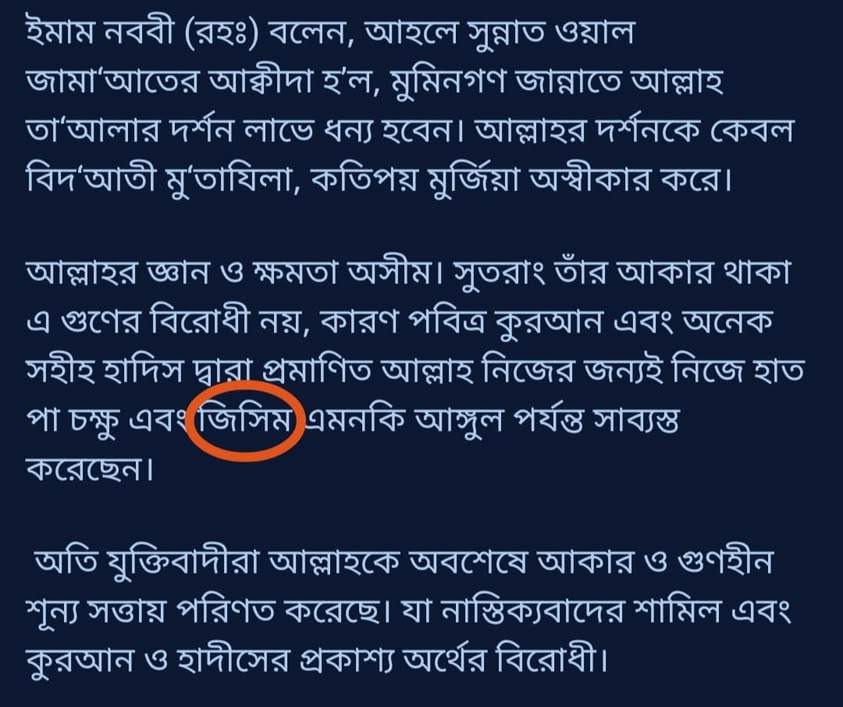
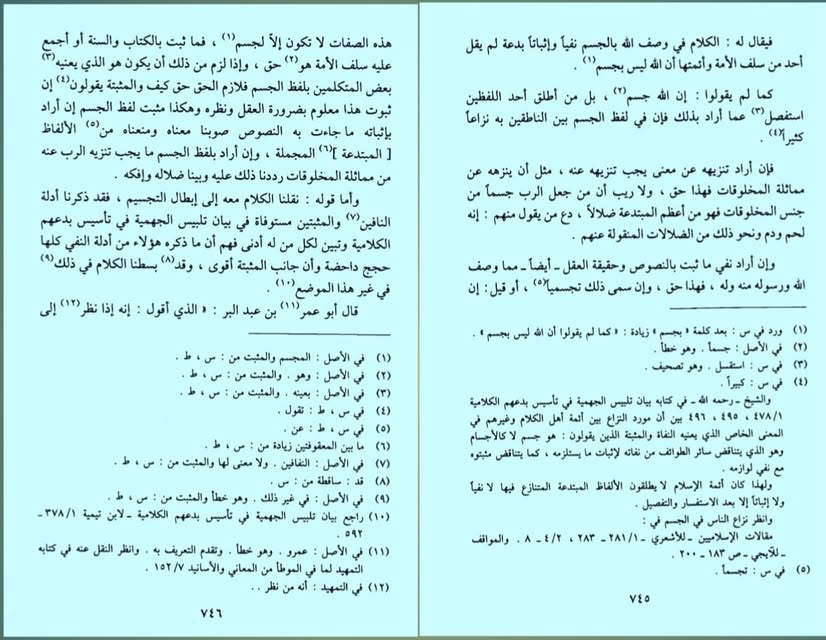

আল্লাহর জন্য ‘দেহ’ শব্দ ব্যবহার করার ক্ষেত্রে শাইখুল ইসলাম ইবনু তাইমিয়া রাহ. যা…
১৮ এপ্রিল, ২০২৪
আল্লাহর জন্য ‘দেহ’ শব্দ ব্যবহার করার ক্ষেত্রে শাইখুল ইসলাম ইবনু তাইমিয়া রাহ. যা বলেছেন, তার সারাংশ হচ্ছে—
‘কোরআন-হাদিস কিংবা সালাফে সালেহিনের বক্তব্যে মহান আল্লাহর জন্য ‘দেহ’ সাব্যস্ত কিংবা নাকচ কোনোটাই করা হয় নি। সুতরাং এটি সাব্যস্ত কিংবা নাকচ করলে ব্যাখ্যা তলব করা হবে। ‘দেহ’ নাকচ করার দ্বারা যদি উদ্দেশ্য হয় মহান আল্লাহকে মাখলুকের সাদৃশ্য থেকে তানযিহ করা, তবে এ নাকচ যথাযথ; কেননা মহান আল্লাহর জন্য সৃষ্টির ন্যায় রক্ত-মাংসের দেহ সাব্যস্ত করা চরম পথভ্রষ্টতা ও বেদআত।
আর যদি ‘দেহ’ সাব্যস্ত করার দ্বারা কোরআন ও হাদিসের নস (টেক্সট) কর্তৃক সাব্যস্ত বিষয়াবলী (হাত, পা, চোখ, চেহারা)-কে সাব্যস্ত করা উদ্দেশ্য হয়ে থাকে, তবে আমরা তার উদ্দিষ্ট অর্থকে সঠিক আখ্যা দেব। আর এমন মুজমাল-অস্পষ্ট ও বেদআতি শব্দ (দেহ) ব্যবহারে নিষেধ করব।’ (কেননা আল্লাহর জন্য কোরআন বা হাদিসে ‘দেহ’ শব্দ ব্যবহার হয় নাই।)
[আত-তিসঈনিয়্যাহ— ৩/৭৪৫-৭৪৬, আল-ফাতাওয়াল
কুবরা— ৬/৪৪৭]
এরপরও কিছু লোক ইবনু তাইমিয়াকে দেহবাদি ট্যাগ দেয়।
যা সুস্পষ্ট অপবাদ বৈ কিছু না।

